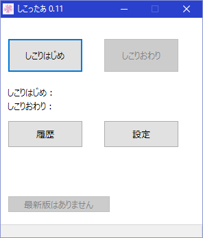

しこったあは、自慰の開始終了時間を記録しツイートしてくれる変態さんなツイ廃向けのアプリです。
Windows PCのみ (Windows10で動作確認済み)
始めるときは「しこりはじめ」ボタン、終わったときは「しこり終わり」ボタンを押してください。
「設定」の「Twitter認証」ボタンを押すと、「しこりはじめ」「しこりおわり」ボタンを押したときにTwitterでつぶやきます。
「履歴」ボタンは自慰記録を表示できます。ダブルクリックすると選択している自慰記録を削除できます。
setting.iniにTwitterのトークンキーを記録しているため厳重に管理してください。
ツイート内容のカスタマイズは設定ボタンで可能です。
バグを見つけたら@_nakkaaへお願いします。意見要望もこちらへ。